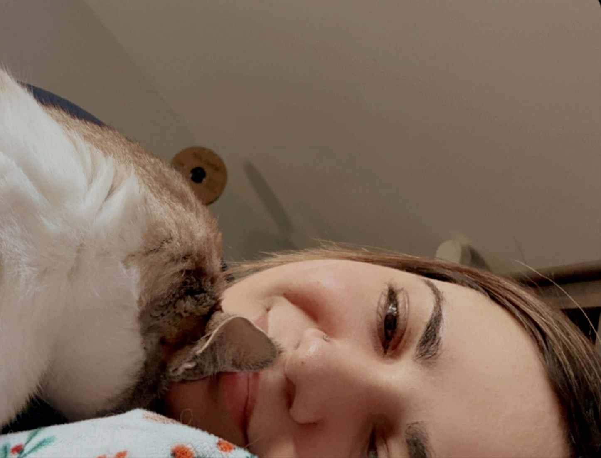
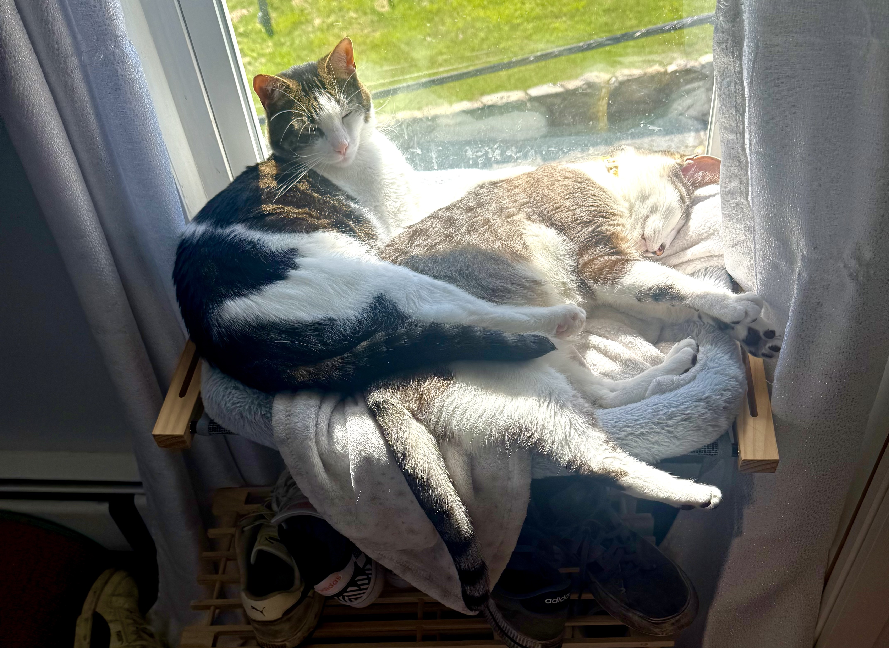
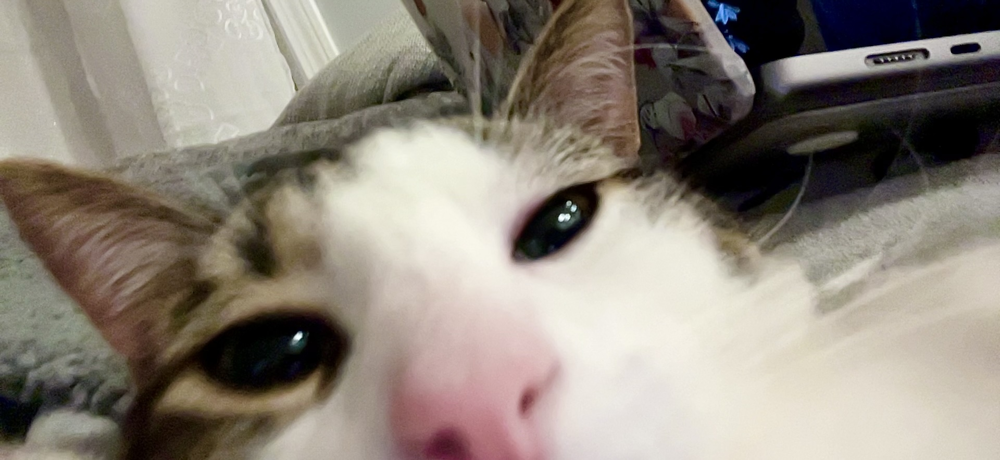
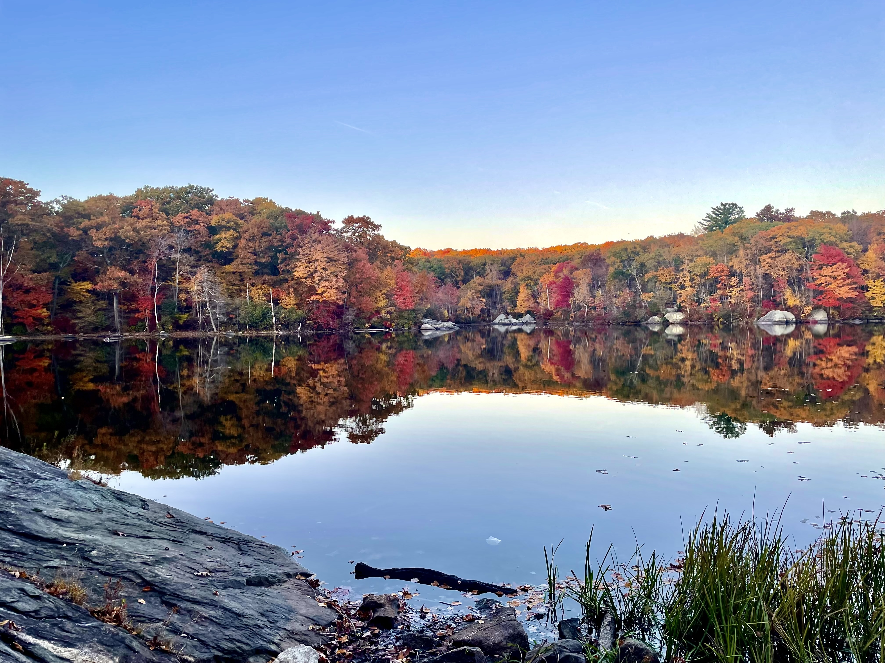

Cassidy Unwrapped
A little about where I started, what I do, and what keeps me creating.
I’m a designer with a background in UX/UI, branding, graphic design, and front-end development. I’ve always been drawn to creative work that feels hands-on, intentional, and a little personal.


I grew up in Portsmouth, Rhode Island, and at fifteen I made a last-minute decision to attend a career and technical school. Looking back, that choice changed everything. It was where I first discovered graphic design, learned the basics, worked with embroidery and vinyl production, and designed my first client logo at seventeen. Outside of school, I was always making something, from vinyl projects to soap making and other creative experiments.
I carried that interest into college, where I continued building my design skills. Before I had fully explored web design, I already knew I was drawn to it. After building my first Shopify store outside of class, it clicked for me! I loved creating websites. From there, I kept following my curiosity through small businesses, stickers, soaps, candles, jewelry, print-on-demand shops, branding, marketing, and anything else that gave me a reason to make something.


One of my favorite things about design is that there is always more to learn. Alongside freelancing, I also stepped into banking, which has challenged me in a completely different way. Both design and banking have taught me to stay curious, adapt, and keep improving. I believe growth comes from experimenting, trying new things, and being willing to learn as you go.
Oh! And I have two cats!